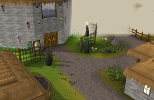
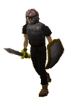
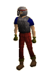

")
Yanille (Members)
Introduction | Location | Points of Interest | Personalities
Quests | Defenders of the Town | Miscellaneous
Quests | Defenders of the Town | Miscellaneous
Introduction

Location

To the north-west is the labyrinthine Tree Gnome Village, while to the north-east lies Port Khazard.
Points of Interest

There is a small warren of tunnels beneath this quiet town, in which a variety of undesirable beasts have taken up residence. Adventurers can gain access at either end.
In the north-east corner of the town are the gallows and the pillory. These are potent symbols of Yanille's refusal to suffer crime, and as a result the town is always clean and tidy, even if the Captain of the Guard is usually drunk.
Personalities

The Captain is a man of many years' experience in the military, and even more years in the tavern. Nowadays he is much more likely to be found training his braincells to die than training his sword arm.
|

Bert is a charmingly rustic citizen of Yanille, who ekes out a living by gathering sand for Sandy's Sand Company, based in Brimhaven. He's a bit hard to understand, but there's certain to be something worth hearing when you speak to him.
|
|
| The Captain can be found in the tavern in the south-west of town. | Bert can be found in his house in north-west Yanille. |

Zavistic Rarve is an important wizard in Yanille, because it is his duty to teach the younger mages that come to the guild to learn. He is slightly irritable, but extremely loyal to his students.
|

The Watchtower looks over the lands surrounding Yanille and, using the powers built into it, prevents the Ogres from invading. The four Watchtower Wizards are charged with maintaining the tower and ensuring that its powers never fail.
|
|
| Zavistic Rarve can be found by ringing the bell outside the Wizards' Guild | The Watchtower Wizards can be found on the top floor of the Watchtower. |
Quests
The following quests can be started in Yanille:
Hand in the Sand (Members)
The Watchtower Quest (Members)
Defenders of the Town

The professional soldiers in Yanille defend the main gates and the walls of the town. They are present in large enough numbers that, should the ogres find a way past the Watchtower's magic, they should be capable of repelling the attack.
|

The Watchtower is the main point of defence in case of attack, so the guards must be well-trained. Tower guards themselves are not enough, though, so the watchmen are also an essential asset for the town.
|
|
| Soldiers can be found north of the pub. | Tower guards can be found in the tower and around the Watchtower. |
|

The watchmen of the Watchtower are probably the most important group of soldiers in Yanille. Without them, the Watchtower that keeps the town safe would be at risk, and they know this. Watchmen are wary of anyone they do not know, and restrict access to the Watchtower to people that need to be there.
|

Unlike the Captain of the Guard, Colonel Radick is a devoted warrior and unlikely to leave his post to have a drink. He is highly skilled with his battleaxe, and will certainly make anyone less skilled than himself feel it.
|
|
| Watchmen can be found in the Watchtower. | Colonel Radick is always in the gatehouse. |
Miscellaneous
- The Magic Guild has a number of portals to other locations (Thormac the Sorcerer's house, the Wizards' Tower and the Dark Wizards' Tower) on the top floor, but you need a Magic level of 66 to access the Guild.
- The tavern in the south-west of Yanille serves Greenman's Ale, which is an excellent resource for those looking to improve their Herblore level temporarily.
- To avoid having to go all the way around the walls or around the Tree Gnome Village to get to the Watchtower, you can use a tunnel conveniently dug behind the Farming patch.

More articles in
Cities and Towns
|
|